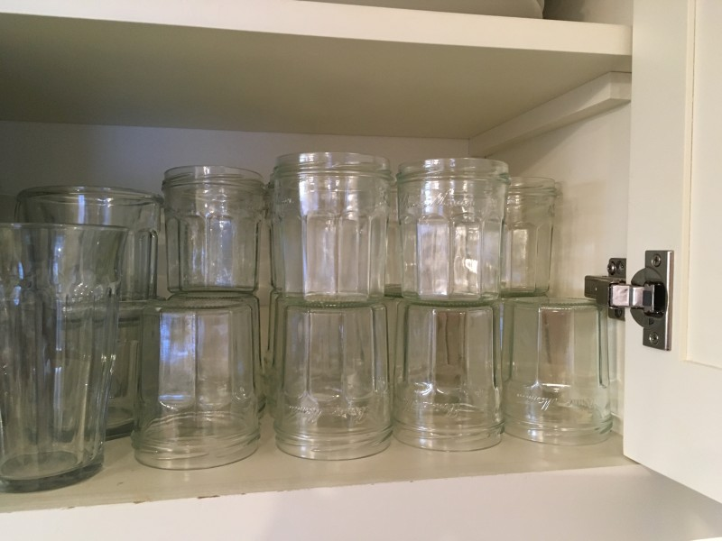

March 24, 2017
Stuff

Ever amazed by how quickly your recycling builds up? Or how many trips you can make to drop off bags at the second hand store and still be surrounded by stuff? I am reminded every time I open my cupboard to reach for a water glass. That’s because we started saving our Bon Maman jelly jars to use as drinking glasses a few years ago. It didn’t take long before we had a cupboard full, and had boxes set aside to gift to all our kids for their cupboards. And still, they keep piling up—making me realize, that’s a lot of jelly, and glass, and shipping, and manufacturing, and resources.
Ninety-nine percent of the products we purchase are thrown into the trash within 6 months. That is twice as much as much as in the 1950s…and that is unsustainable. What can we do about it? Change the way you think about shopping and bringing new things into your household—about what you buy, and why. Check out this video from ‘The Story of Stuff’ and consider using something that has already been made—rather than adding to the pile of ‘stuff’.
http://storyofstuff.org/movies/story-of-stuff/